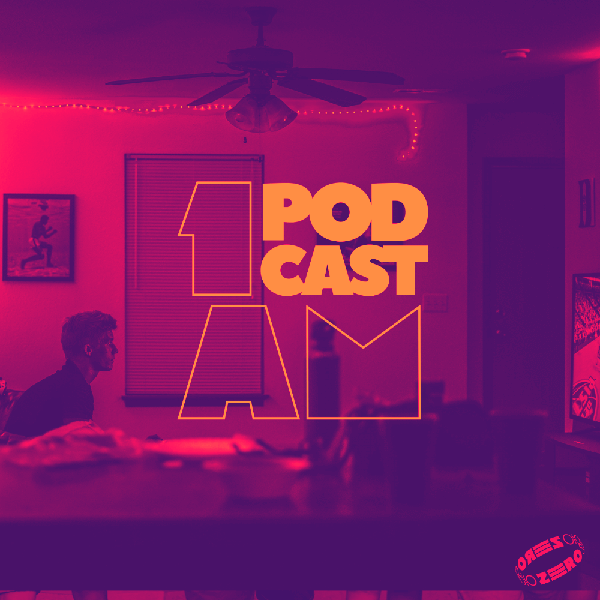
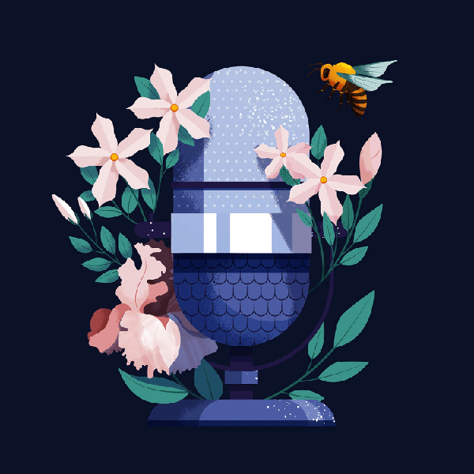
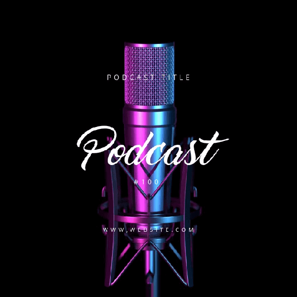
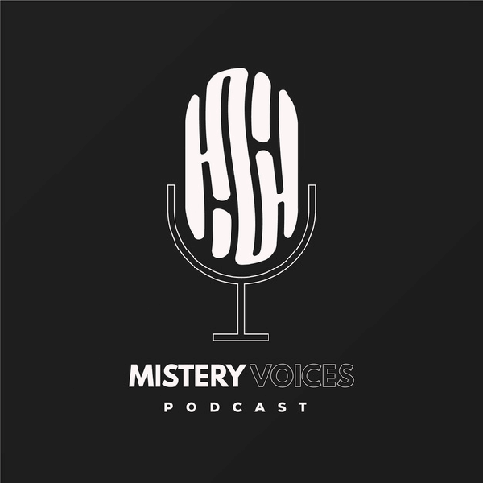
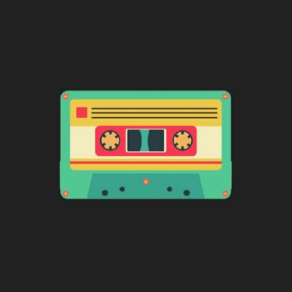
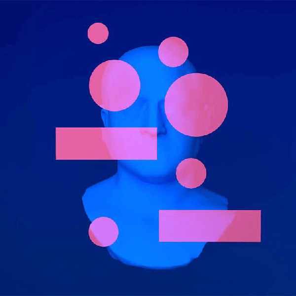

Um lugar seguro para ser ouvida
Um espaço de escuta, acolhimento e transformação para mulheres.
Um podcast criado para dar voz a quem passou por discriminação, assédio, desrespeito, rotinas exaustivas e traumas não curados. Você não está sozinha.
Com respeito pelo seu tempo, pela sua história e pela sua voz.
A sua história merece ser escutada.
ELASPOD · ESCUTA E ACOLHIMENTOEscutar também é cuidar
Histórias que nos aproximam
Conversas honestas sobre experiências reais, caminhos de apoio e a força que nasce quando uma mulher sabe que não está sozinha.
-

Quando o silêncio pesa: encontrar espaço para falar
Dar nome ao que vivemos pode ser o primeiro passo para voltar a sentir-se acompanhada.
Áudio em breve
-

Limites, respeito e o direito de dizer não
Uma conversa sobre relações respeitosas, autonomia e os nossos limites.
Áudio em breve
-

O cansaço de dar conta de tudo
Rotinas exaustivas, expectativas e a importância de pedir apoio sem culpa.
Áudio em breve
-

Reconstruir-se depois de uma experiência difícil
Cada percurso é único. Falamos de cuidado, tempo e possibilidades de recomeço.
Áudio em breve
-
Assédio e discriminação: não é culpa sua
Um espaço de informação e acolhimento para experiências que não devem ser normalizadas.
Áudio em breve
-

A força de caminhar juntas
O apoio mútuo pode abrir caminhos. Conheça a potência de uma rede de mulheres.
Áudio em breve
-
Traumas não curados: acolher sem pressa
Um convite a olhar para a própria história com gentileza e sem julgamentos.
Áudio em breve
-

Voltar a confiar na própria voz
Pequenos passos para recuperar espaço, confiança e esperança no seu ritmo.
Áudio em breve
Os episódios serão publicados aqui. Os controlos de áudio ficam disponíveis quando cada gravação for adicionada.
Sobre o ElasPod
Um espaço onde a sua voz tem lugar.
O ElasPod é um podcast e uma comunidade pensados para acolher, apoiar e orientar mulheres que enfrentam discriminação, assédio, humilhação, desrespeito, rotinas árduas ou traumas ainda por cuidar.
Acreditamos na escuta sem julgamentos, na partilha com respeito e na possibilidade de construir redes de apoio. Cada mulher decide o que quer contar e quando quer contar.
Faça parte desta conversaJuntas, no nosso tempo
Rodas de Conversa
Encontros presenciais e online para partilhar, escutar e encontrar apoio mútuo num ambiente seguro e respeitoso. Não precisa de ter as palavras certas: pode falar, ouvir ou simplesmente estar presente.
- Espaço de partilha sem julgamentos
- Participação presencial ou online
- A sua presença e os seus limites são respeitados
Partilhar é um convite, nunca uma obrigação.
ElasPod · um espaço seguro para todasEstamos aqui para ouvir
Quer saber mais ou conversar connosco?
Escreva-nos pelo WhatsApp para saber mais sobre o projeto, as Rodas de Conversa ou como participar.
Falar pelo WhatsApp+351 910 526 079